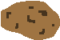

Potato Management System V1.0.0
Funds: $10000 Potatos: 10 Time to Harvest: 1:00
Potato Status

| Stat | Value |
|---|---|
| Health: | 100% |
| Alive: | true |
| Weight: | 1 |
| Water: | 100% |
| Nutrients: | 100% |
| Organic: | true |
| On Fire: | true |
| Infested: | true |
Potato Controls
Current Potato
P1
P2
P3
P4
P5
P6
P7
P8
P9
P10
Gentle Soap Charge
Firecrackers
AA Gun
SAM
Orbital Strike
Firecrackers Charge